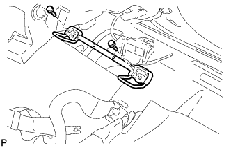

|
Disengage the 4 claws and remove the rear seat cushion hinge cover NO.1.
Cross Anchor Bracket Removal |
| 1. Remove Rear Seat Headrest Assembly |
| 2. Remove Rear Seat Headrest Assembly CTR |
| 3. Remove Rear Seat Cushion Hinge Cover NO.1 |
|
Disengage the 4 claws and remove the rear seat cushion hinge cover NO.1.
| 4. Remove Rear Seat Cushion Hinge Cover NO.2 |
 |
Disengage the 4 claws and remove the rear seat cushion hinge cover NO.2.
| 5. Remove Rear Seat Assembly RH |
 |
Remove the 2 front side bolts of the rear seat assembly RH.
 |
Fold the rear seat assembly RH forward.
Remove the 2 rear side bolts and remove the rear seat assembly RH.
| 6. Disconnect Rear Seat Outer Belt Assembly Center |
 |
Remove the bolt and disconnect the rear seat outer belt assembly center together with the rear seat inner belt assembly.
 |
Remove the washer and rear seat outer belt assembly center from the rear seat inner belt assembly.
| 7. Remove Cross Anchor Bracket |
 |
Remove the 2 bolts and cross anchor bracket.